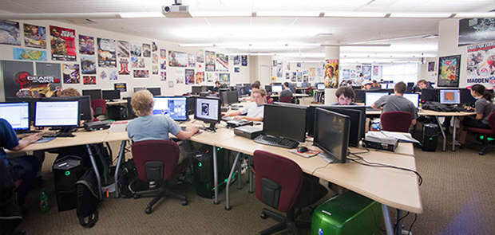
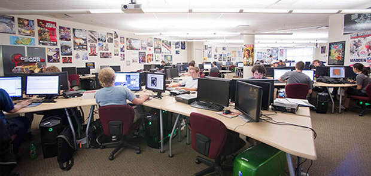

GitHub Education: https://education.github.com/
Microsoft Education: https://www.microsoft.com/en-us/education
Google Education: https://edu.google.com/computer-science/
Presentation available at: http://jpbetley.github.io/presentations/st-e-cs
Built using reveal.js: https://github.com/hakimel/reveal.js

 
